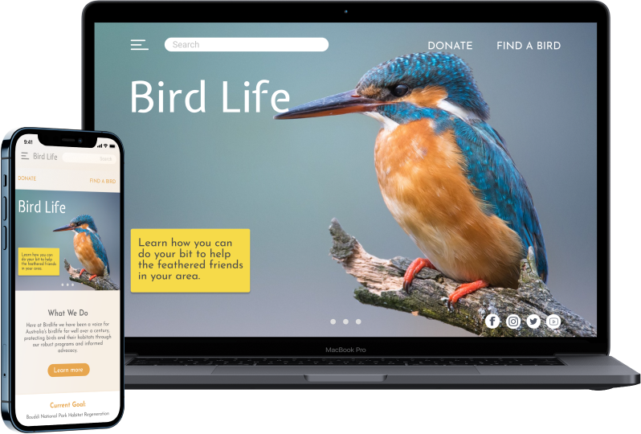

Story Board
Moving forward we created a storyboard to illustrate how a user might come to find the BirdLife webpage helpful in a real life situation. This enabled us to further empathise with our users and focus on what was most important to them
A user centric redesign the BirdLife website to enable better user efficiency, usability and accessibility to information using in depth analysis and research and implementing UX/UI methods
View the final product hereWhat They Do
BirdLife Australia is Australia’s largest bird conservation organisation. As an independent, not-for-profit organisation, the aim is clear : to create a bright future for Australia's birds. Like you, birds are in our nature.
Our Goal
To successfully redesign the BirdLife website to enable better user efficiency, usability and accessibility to information using in depth analysis and research and implementing UX/UI methods.


My Role
I was involved in every stage of this project, working cohesively alongside my team mates, Pinar & Kit. We had a three week timeline for this project.
Defining the Problem
BirdLife was designed to achieve public access to information regarding the preservation of the Australian bird population and environment and encourage users to donate to the cause. We have observed that the current BirdLife webpage is difficult to navigate which is turning users and potential volunteers/ donors away from the site. How might we improve the BirdLife website so it can entice users (both new and existing) to engage with the website and all of its valuable information and encourage involvement with bird preservation in Australia
Proto Persona
To begin our research, we created a proto persona in order to gain insight on potential users. The proto persona enabled us to create empathy with users so we could better understand how to design for them throughout this process.
Evaluation
We did a heuristic evaluation on the existing BirdLife webpage. Using the 10 general principles for interaction design, we unfortunately found that the current BirdLife website was not adhering to most of these general rules. The few princbles the current webpage displayed were the following
User Flow
To further understand the website, we created a user flow. This informed us how a user would move through the website and the necessary actions required to complete an action, such as donating.
Competitor Analysis
Competitor analysis was up next so we conducted a SWOT analysis. A few key opportunities arose from this that would enable us to showcase how the BirdLife website could not only match but outweigh its current competing websites.
Story Board
Moving forward we created a storyboard to illustrate how a user might come to find the BirdLife webpage helpful in a real life situation. This enabled us to further empathise with our users and focus on what was most important to them
After our initial research it was time to put the original BirdLife website to the test. We devised a few tasks for user’s to complete so we could see how they were navigating through the current website.
Users were struggling to find the information they desired
Users were intrigued by the “Find a Bird” function but they found it difficult to use
Users could easily donate but got annoyed at the amount of information required to make a payment
Users could easily donate but got annoyed at the amount of information required to make a payment
Site Mapping & Card Sorting
When we had a look at the origional website, there was a lot of cluttered information that users were struggling to process, so we condensed all of the content into four main categories. This would help solve a user insight from the inital usability testing.
Wireframing
With a clear idea of how we were going to sort the web information, the design phase commenced, begining with wireframing the concept
Style Guide
Creating a style guide was the foundation of moving forward into mid/hi fidelity prototyping. We chose a sunset orange to compliment the elegance and simplicity of our font as it is mimics the colour and tone of some Australia native birds
Iterations
Having a border on the event dates hinted that there was an event on. We also gave them the option of viewing the events in a list format
Testing proved that placing one of our most important features in a submenu made it difficult to find, so it became its own header in the menu
Finding there was an overload of information on the website, we sorted group content appropriately
The Final Product
Through multiple rounds of testing and iteration the final prototypes were produced. Working with a mobile first method, when then scaled the prototype to fit across larger platforms
View the final product here Final Thoughts
Deveolping the BirdLife redesign was an inspiring journey. A few final thoughts about the process and where the project could develop further
Research has been the most integral part of the redesign
Using responsive web design is crucial in order to make a successful, cross platform product
We understand that the product will need continual iteration and testing in order to be at its most optimal level
And finally, thank you to my fantastic and talented team members Pinar and Kit